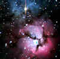

AstronomyMaxwell Scientific provides a wide range of astronomical products — perfect for classroom demonstrations and projects. Choose from the finest equipment from NewtonTM, DC OpticsTM, and StarVision™. Featured Astronomical Products
Comments From Our Astronomy CustomersHere at Maxwell Scientific, we strive to deliver high-quality astronomy equipment in a prompt and professional manner. Still, we're as happy as anyone when we receive a compliment! "Thank you for your excellent service. I purchased the Newton 3" refractor for our astronomy lab. The view of Saturn's rings was exciting moment for the entire class." Dawn Hillbert. San Jose, CA "I appreciate the prompt delivery of the pack of star disks. Your company is a great boon to science teachers everywhere." Steve Fawson. Cleveland, OH "The MC5 Maksutov-Cassegrain was delivered as promised: on-time and at a great price. When it's time to get my next scope, I'll look to your company first." Brenda Dicks, Greeley, CO |
Run the Messier Marathon It's time for the annual Messier Marathon. Instead of lacing up their Nikes, amateur astronomers will be hauling telescopes, star charts, and a hefty pot of coffee in an all-night vigil hunting the Messier objects. Messier objects are stellar objects, classified by astronomer Charles Messier in the 18th century, ranging from distant galaxies to star clusters to stellar nebula. Now is the only time of the year in which all 110 Messier objects are in the sky. Unfortunately, if you want to see all of them, you have to start looking right after sunset and continue until just before sunrise — hence the term, "marathon." Ironically, Charles Messier wasn't all that interested in his objects. He made the list in order to avoid seeing them. Messier was more interested in discovering new comets and these beautiful stellar objects kept getting in the way. |